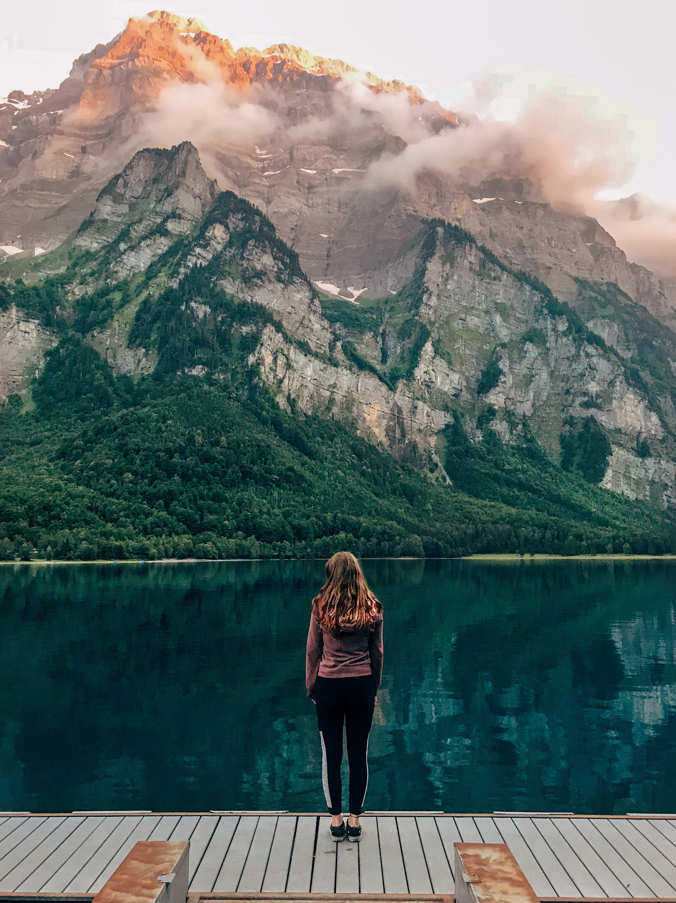

A Oceania é um continente localizado no hemisfério sul, e é considerado o menor de todos. Não
obstante, é um dos melhores lugares para se viver ou visitar.
Por questões de curiosidade, a Oceania é composta 90% por território australiano, e os 10% de outros
países. Sendo importante destacar que a maioria dos países são territórios ultramarinos, garantindo
um clima confortável para todas as estações do ano.
Ainda assim, a Oceania tem em si uma grandiosa relevância cultural, sendo que em todos os países
está presente a cultura indígena, mais predominantemente a Maori.

Na Oceania a aventura é garantida!
Seja qualquer lugar que você escolher, está prestes a se tornar o maior aventureiro da sua vida!
Um dos principais países com maior fama de aventura é a Nova Zelândia, país no qual oferece uma diversidade de esportes radicais, desde rafting a voo livre. Mas já se você prefere conhecer os animais mais raros do mundo, a Austrália lhe oferece essa grande oportunidade.
Se você se interessou mais pela Oceania, clique aqui para conhecer um pouco mais sobre o continente mais aventureiro do mundo todo!
Por apresentar diferentes tribos, a África abranje grande diversidade cultural, tendo diferentes rituais e religiões. Seus ritos são feitos através da dança e do canto, sendo estes feitos em grupo. Existem diferentes tipos de ritos usados para determinados momentos da vida, como um de grande importância, integração dos seres vivos e passagem da vida para a morte. Pelo fato de muitos africanos terem sido escravizados e enviados ao Brasil, influenciaram muito na cultura dele, trazendo a capoeira, o candomblé e ingredientes culinários, como o leite de coco, por exemplo.
Na África a aventura é garantida! Aqui, você pode fazer um safari pela savana africana ou, quem sabe, um passeio de dromedários pelo deserto!
Talvez visitar o país que foi cede na Copa do Mundo 2010, a África do Sul, ou então o país que deu origem a uma série de filmes de desenho animado, como o Madagascar!
Por isso, não perca tempo! Venha se aventurar na África!

A Ásia é considerada o maior continente do mundo.E é justamente por isso que podemos perceber que é um continente extremamente rico em fatos históricos e em questões de diversidade cultural. Aqui, você poderá encontrar resquícios de antigas civilizações, tal como cidades subterrâneas ou até mesmo submersas, as quais deixaram um grande valor histórico para o continente asiático. Do mesmo modo, a Ásia apresenta uma gastronomia não só diversificada mas também muito exótica.

Na Ásia, a aventura é um pouco diferenciada. Karatê e Judô são os principais esportes praticados por lá, mas isso não significa que esportes como escalada, esqui, rafting não sejam praticados, pois os mesmos só são praticados em menor quantidade. Então, se você está a fim de se aventurar nos vales e templos asiáticos, não perca tempo e venha logo conhecer todas as incríveis histórias épicas da Ásia e se aventurar explorando os grandes templos!

Por ser o segundo maior continente do mundo, por ser dividido em três partes e por ter sido colonizado por diferentes países de diferentes continentes, a América é um lugar que abranje uma grande diversidade cultural, sendo uma ótima opção para quem quer aprender um pouco mais sobre o local.
Aqui, moraram tribos que foram muito importantes no desenvolvimento da arquitetura e agricultura, sendo responsáveis por grandes contruções, que estão de pé até os dias de hoje.
Venha passar suas férias na América e descobrir mais sobre a cultura!

Quando se pensa na América, é impossível não lembrar dos famosos pontos turísticos e atrações, como a Estátua da Liberdade e a Walt Disney World, por exemplo. Sem falar nas aventuras que se podem ter aqui, como se aventurar nos Andes ou dar um mergulho em um lago cercado por cachoeiras. Por isso, não perca tempo! Venha viajar pela América, descobrir mais sobre a cultura e se divertir nesse paraíso!

A Europa é um continente localizado no hemisfério norte, abrangendo cerca de 50 países. Aqui, você encontra os pontos
turísticos mais famosos do mundo e os países
investem de forma intensiva no turismo sustentável.
Neste continente ocorreram importantes revoluções culturais, políticas e econômicas.
A maioria dos países europeus é membro do bloco ecômico chamado União Europeia, onde os membros possuem a mesma moeda, o euro, e é permitida
a livre circulação de pessoas entre tais nações.

Venha conhecer a Europa!
Independente do lugar que escolher, você encontrará muita cultura e famosos monumentos!
Aqui, você pode visitar a nação da gastronomia e dona da Torre Eiffel, a França. Ou, quem sabe, o país da industrialização e da monarquia parlamentarista,
a Inglaterra. Neste continente você encontrará muita história e cultura por todo lugar! Venha passar as férias aqui!